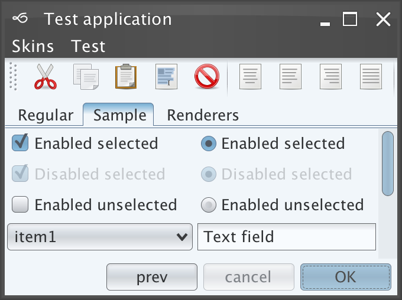
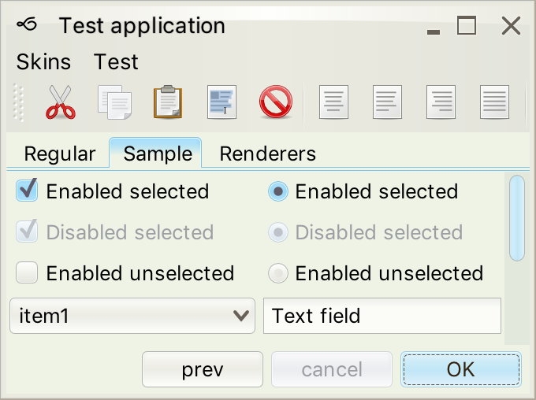
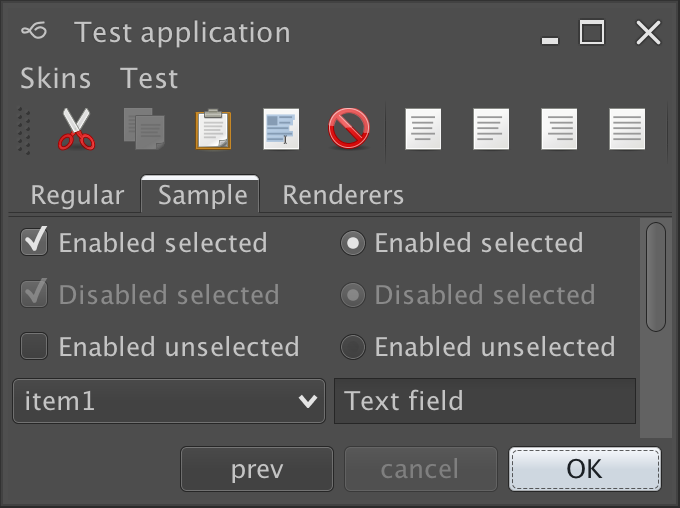
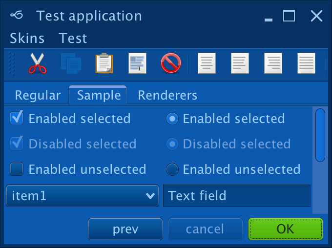
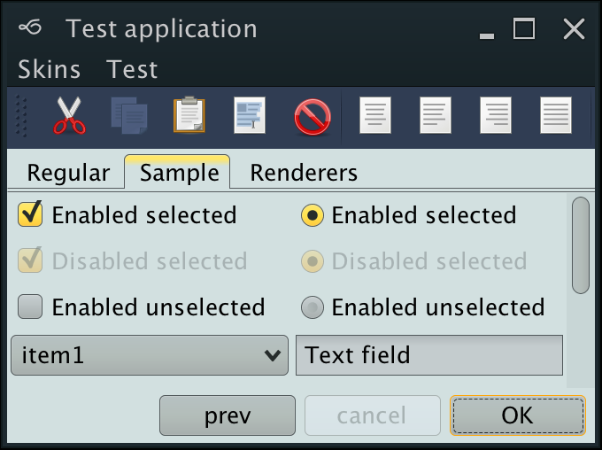
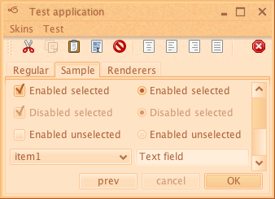
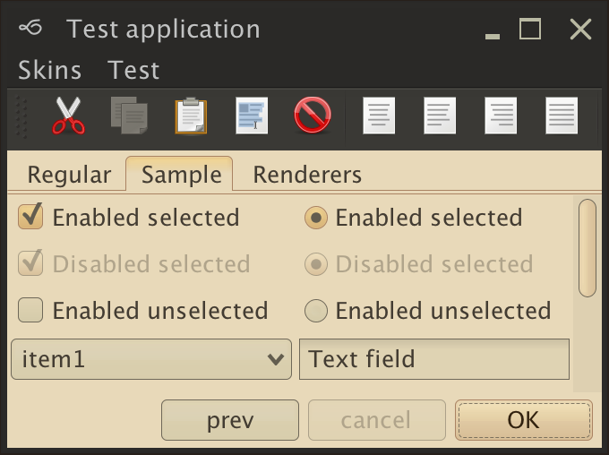

Click on the button below to launch a signed WebStart application that shows the available Substance features.
The test application is structured in the following way:
You can switch Substance skins via the "Skin" or "Look & feel" menu items. In addition, you can test the support for high-resolution monitors via "Sizes" tab or the font size slider in the application status bar.
The left side of the application status bar shows the build stamp and the version of Substance.
The test application requires a number of jar files. These are bundled in the WebStart application, and can be downloaded separately from the "Documents & Files" section of the project site.
substance-tst.jar - contains
the test application and its resources. The main class is
test.Check and most of the
tabs are implemented in the test.check
package.substance.jar - the Substance
look-and-feel itself.trident.jar - the
Trident animation
library. Is used for the animation effects.forms-1.2.0.jar -
FormLayout from JGoodies. Is used
to layout most of the panels.swingx.jar -
SwingX. Is used for the status
bar and the control panel task pane container.substance-swingx.jar -
Substance plugin
for SwingX. Is used to provide consistent appearance for SwingX controls.